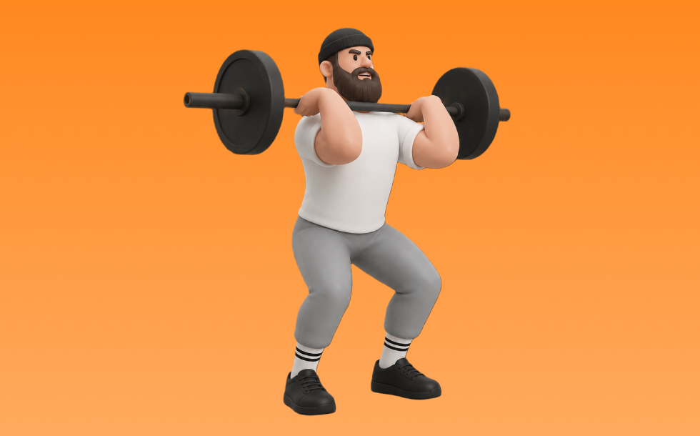

プッシュプレス

プッシュプレスとは、バーベルを使って「押す」動作で肩（三角筋）、腕（上腕三頭筋）を鍛える種目です。高重量を扱いやすく、筋力を伸ばしやすいのが特徴で、軽くしゃがんで脚の反動を使いながらバーベルを頭上へ押し上げ、コントロールして下ろす動作を繰り返します。肩の厚みづくりとオーバーヘッドの押す力の向上が期待できます。
- 対象部位
- 肩
- 器具
- バーベル
- 記録形式
- 重量・回数
- 別名
- PP
YouTube動画
-
ジャーク（プッシュプレス/プッシュジャーク）完全教科書マニュアル（1から10までフォームと手順を全部解説）push press/push jerk
-
【プッシュプレス】を良くする裏技！
-
【肩(三角筋)筋トレ】ミリタリープレスのやり方・フォーム・コツ | 「怪我が起こりづらい手幅」等初心者向け動作をご紹介！
-
腕立て伏せを応用した「プッシュプレス」の実践
-
【プッシュジャーク VS プッシュプレス】違いや方法を徹底説明！
-
筋トレ：プッシュプレス・パワージャーク・スプリットジャーク入門
YouTubeショート
-
プッシュプレス（バーベル使用）
-
ダンベル・プッシュプレス
-
プッシュプレス解説
-
【 筋トレ動画 】プッシュプレス #筋トレ #肩トレ #pushpress #explosivepower #shorts
-
正しいダンベルベンチプレス5つのポイント 【筋トレ】
-
正しい腕立て伏せ3つのポイント #筋トレ
-
胸トレのやり方🔥〜ダンベルプレス基礎編〜 #筋トレ #筋肉 #筋肉社長 #胸トレ
-
正しいベンチプレス、5つのポイント【筋トレ】
-
正しいレッグプレス4つのポイント #フィットネス #筋トレ
-
ダイエット前の一番強かったプッシュプレス 強すぎぃ！
-
ベンチプレスを伸ばすミリタリープレスのコツ〜くづまる
-
腕のやり方🔥〜ケーブルプレスダウン基礎編〜 #筋トレ #筋肉 #筋肉社長 #腕トレ
-
初心者向け🔰チェストプレスのワンポイントアドバイス！ #筋トレ
-
【ケーブルプレスダウンの正しいやり方】理想と間違い#仙台パーソナルジム#仙台ジム#tryve#TRYVE#トライヴ#筋トレ初心者#腕トレ#ボディメイク#ボディビル
-
【これ、間違いです】肩すくみナローベンチプレス #shorts
-
細マッチョの胸トレはベンチプレスだけで十分🏋️ #筋トレ #宅トレ #細マッチョ
-
【筋トレ解説】腕立て伏せができない人向け！膝つきプッシュアップ解説
-
胸が成長しないダンベルプレス #筋トレ
-
【やらなきゃ損な万能種目】パイクプッシュアップの習得ステップ #筋トレ #肩トレ #腕立て伏せ
-
クリーン&ミリタリープレス100kg+プッシュプレス100×2
-
持田選手にベンチプレスについてレクチャーしていてもらいました！次はどの種目の解説をやってほしいかコメントしてね！#筋トレ #volix #トレーニング #fitness #ベンチプレス
-
今さら聞けないケーブルプッシュダウンのやり方説明してるで‼️#トレーニング #パーソナルトレーニング #フィットネス #筋トレ #プロテイン #ワークアウト #腕トレ #三頭筋
-
ミリタリープレス90kg×2+プッシュプレス3発
-
ベンチプレスの肩甲骨の正しい使い方！フォーム
-
自己ベスト80kgなるか、、、？ #Shorts #筋トレ女子 #ベンチプレス
-
【ちょー分かりやすい】正しい腕立て伏せのやり方 #腕立て伏せ #筋トレ初心者
-
正しいサイドレイズ4つのポイント #筋トレ
-
【かんたんマシンの使い方】チェストプレス編＃shorts
-
プッシュアップバーで腕立てがこんなに変わる！
-
背中トレのやり方🔥〜ダンベルワンハンドロー基礎編〜 #筋トレ #マッチョ #筋肉社長 #背中トレ
-
【山本義徳】ベンチプレスより腕立て伏せが効果的な理由はこれです【切り抜き】
-
【ダンベル】背中トレ4選 #筋トレ
-
正しいラットプルダウン4つのポイント【筋トレ】
-
【よくある間違いケーブルプレスダウン】 #ダイエット #筋トレ #新座市 #志木市 #ケーブルプレスダウン
-
ダンベルプレスのやり方#初心者 #ダンベル
-
腕立て伏せの一番大事ポイント#shorts
-
腕立て伏せの正しいフォーム！！
動作方法
- 安定した姿勢を作り、肩と体幹を固定する
- 狙う部位を意識して、反動を使わずに押す
- 可動域を保ちながら、ゆっくり元に戻す
動作ポイント
- 肩をすくめない
- 手首を寝かせすぎない
- 反動を使いすぎない
ワンポイントアドバイス
- 重量よりも肩の軌道を安定させる
- 首まわりの力みを減らして行う
目的別回数設定
目的や体力に応じた一般的な目安です。無理のない範囲で調整してください。
- 筋力アップ
- 1〜5回
- 筋肥大
- 6〜12回
- 持久力アップ
- 13〜20回
YouTube動画について
動画はYouTubeの公開情報をもとに表示しています。内容は投稿者によるもので、Biggrによる監修ではありません。
アプリを入手
筋トレやトレーニングの記録はBiggrにお任せください。今すぐ無料で使い始められます。